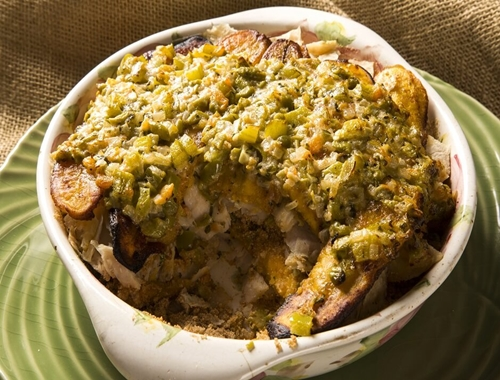
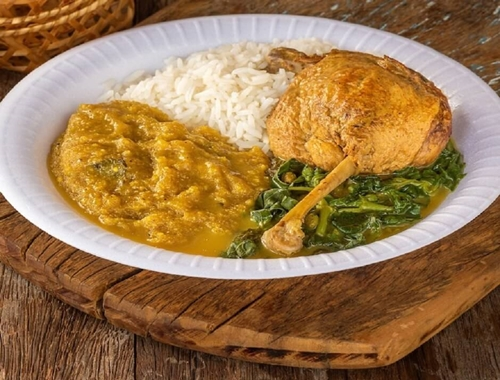

Tacaca

- Essa sopa ou caldo tem origem indígena e usa como ingrediente-base o tucupi – caldo amarelado e extraído da mandioca brava durante a fabricação da farinha, que, inclusive, pode ser prejudicial à saúde caso não tenha preparo adequado. Para fazer o tucupi, a mandioca precisa ser descascada, espremida, ralada, seca e peneirada. O "extrato" obtido durante o processo passa por fermentação natural durante vários dias e só depois é cozido com diferentes temperos. Aí sim, está pronto. A mistura do tucupi com folhas de jambu – erva conhecida por anestesiar a boca – e com camarões secos, dá um toque especial ao tacacá. Para finalizar, a receita é temperada com bastante pimenta, sal, alho e cheiro-verde. O resultado final costuma ser servido em cuias nos lugares mais tradicionais e vendido pelas chamadas "tacacazeiras", consideradas Patrimônio Histórico Imaterial de Belém do Pará.
Pirarucu de casaca
- Conhecido pelas famosas lendas amazônicas, o pirarucu é um dos maiores peixes de água doce do Brasil e muito utilizado em diversas receitas por não possuir espinhos e ter uma carne extremamente macia. O "pirarucu de casaca", especificamente, parece com uma lasanha em sua montagem, mas não nos ingredientes! Ele é um prato montado em camadas de peixe, farofa de mandioca, banana da terra frita e vegetais refogados, exatamente nessa ordem. Delicioso e super tradicional, esse prato faz sucesso nas festas da Região Norte e pode ser servido de diversas maneiras, até mesmo com leite de coco!
Pato no tucupi

- O pato no tucupi é um clássico da Região Norte e um grande símbolo, em especial do Estado do Pará. Assim como o tacacá, ele tem o tucupi – caldo extraído da mandioca brava, cozido e fermentado por cerca de 3 dias – como um dos ingredientes principais. Para que o prato ganhe ainda mais sabor, são adicionadas, ao próprio caldo, algumas ervas, como o jambu e a chicória. E não podemos esquecer do pato, que é assado, desfiado e fervido junto ao tucupi. Por usar uma carne exótica e o caldo feito da mandioca, originalmente "venenosa" em sua versão crua, o pato no tucupi requer muito conhecimento para ser preparado, tudo bem? Mas, com certeza, esse é um dos pratos típicos que você não pode deixar de experimentar!
Mujica de Peixe

- Já que nós estamos falando de sopas e caldos, que tal provar também uma bela mujica de peixe? Essa deliciosa sopa da região amazônica pode ser servida em diversos momentos da refeição, da entrada ao prato principal, e carrega tradição e sabor. A receita leva, na maioria das vezes, o peixe tambaqui depois de ser desfiado. Para fazê-la, os nortistas utilizam as sobras do peixe que já foi utilizado em outro prato no dia anterior. Além disso, acrescentam azeite, pimenta, farinha de mandioca e temperos para conseguir a cremosidade que é marca registrada do caldo. Deu água na boca, né? Lembre-se de consumir o prato em um local confiável ou prepará-lo sempre priorizando o momento de conservar os alimentos, principalmente o peixe que vai ser reutilizado: a conservação adequada evita problemas de saúde e desperdícios também.
Gurijuba
- Vai mais um peixinho aí? O peixe gurijuba é o mais consumido no Amapá e ganha destaque quando preparado ao molho de tucupi que, aliás, foi eleito o melhor e mais vendido prato do Festival Brasil Sabor, realizado no estado em 2021. Outras receitas típicas, como a da moqueca, também utilizam o peixe, que é sempre muito bem temperado em todas elas, assim como a maioria dos ingredientes de opções tradicionais da culinária nortista.
Costela de Tambaqui

- Nós já falamos um pouco sobre o tambaqui por aqui, mas ainda não dissemos a você que a costela do peixe é mais uma parte super valorizada e imperdível para conhecer e experimentar! Comum na Região Norte, a "costelinha de tambaqui", como é carinhosamente chamada, costuma ser servida frita e até como um tipo de petisco de boteco. Para comer enquanto você conversa e se diverte com os amigos, por exemplo. Ela é sempre acompanhada de molho de pimenta, que dá aquele toque especial no sabor.